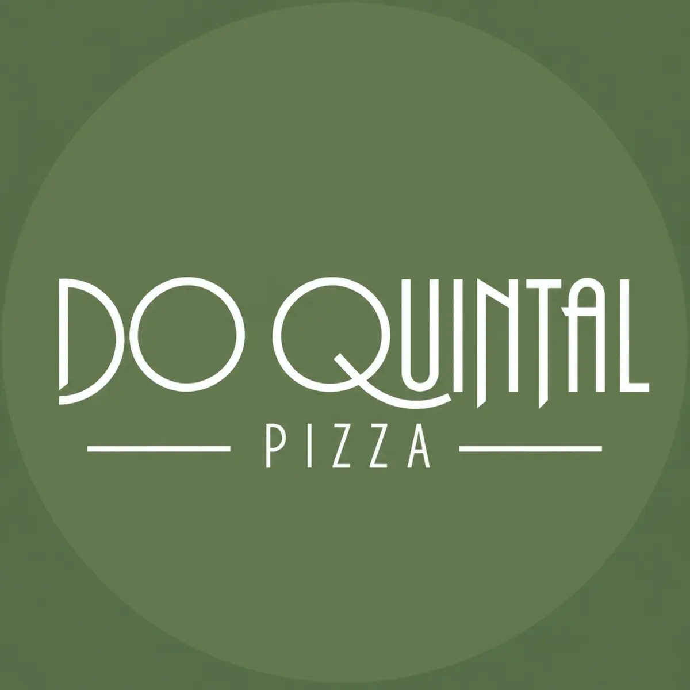

Pular para o conteúdo

A Do Quintal
Cardápio
O espaço
Visite
Ver horários
Contato
↗
A Do Quintal
Cardápio
O espaço
Visite
Sabores da casa
Nosso cardápio.
Ingredientes escolhidos, receitas autorais e clássicos preparados do nosso jeito.
Cardápio digital
Consulte disponibilidade
Valores e itens podem sofrer alterações.
Início
Contato
Como chegar